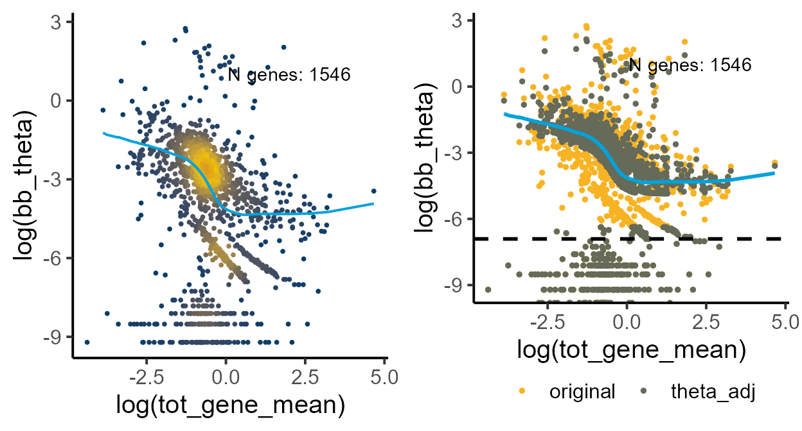
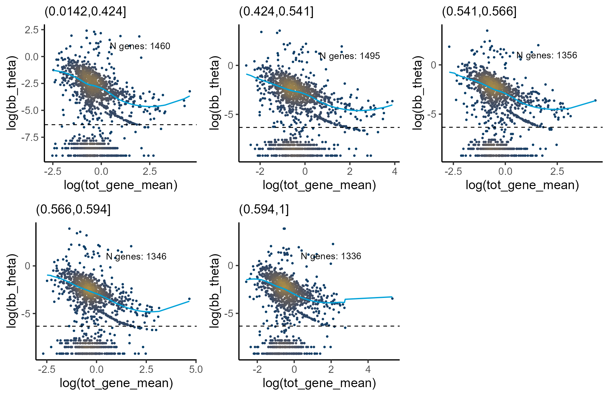
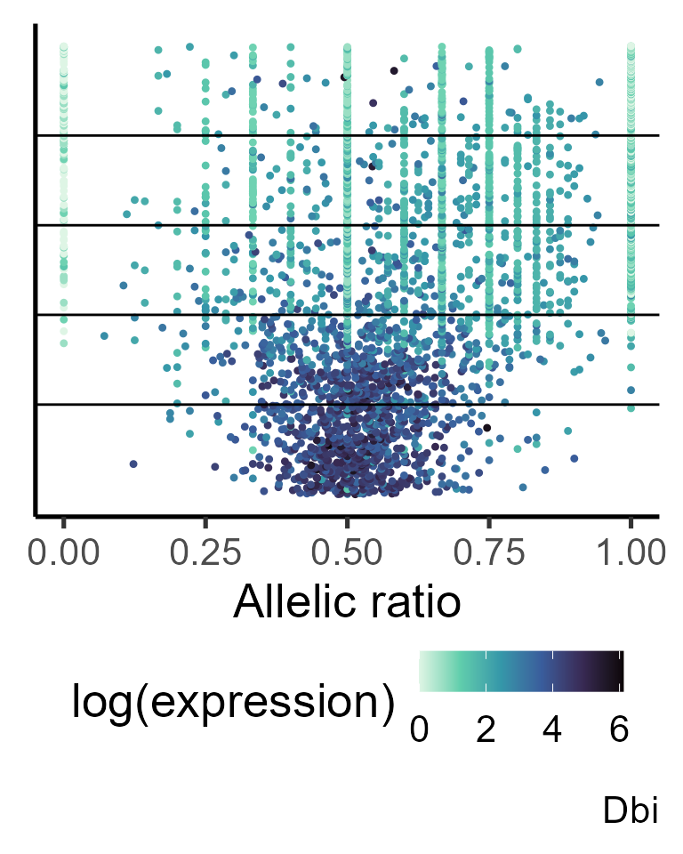
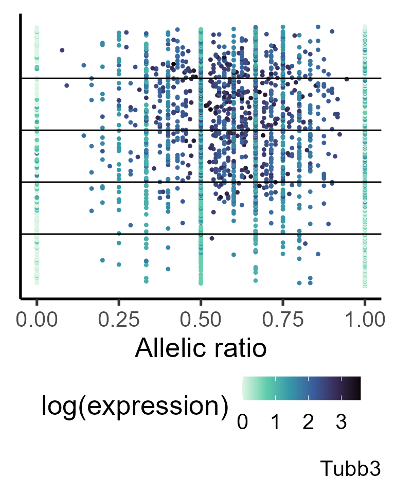

differential_ASE
differential_ASE.RmdIdentifying Changes in Allelic Ratio Distribution (Mean or Variance) Across Groups
Introduction
ASPEN can identify genes with differential allelic patterns across groups. Groups can represent cell types, time points, or other experimental factors. If sequencing was performed across multiple time points, group identities correspond directly to the respective time points. Please note, that the batch correction might be required to remove any technical batch effects. Alternatively, cells can be ordered along a developmental trajectory (using tools like Monocle, Slingshot, palantir, etc.), the trajectory is often represented as pseudotime - a probability of a cell to be in a terminal state, bounded within the interval. Since ASPEN detects changes across discrete groups, pseudotime should be binned (eg. based on tertiles or quintiles) before analyses. \ To test for changes in the mean allelic ratio between the groups, ASPEN evaluates whether a gene’s allelic distribution parameters are the same across the groups () or they are group-specific (). ASPEN goes through the following steps:\###Setup
Loading allele-specifc count data
As in other vignettes, we use mouse brain organoids data from CastB6 hybrids (Medina-Cano, 2025). Pseudotime for this data was estimated using palantir (Setty, 2019). For this example, we focus on three cell types representing early neurodevelopment:: radial glial cells (RGCs), intermediate progenitors cells (IPCs), deep layer neurons (cortical neurons).
data("Bl6_Cast_a1")
data("Bl6_Cast_tot")
#load_file <- system.file("extdata", "Bl6Cast_cell_annot.xlsx", package = "ASPEN")
#cell_annot <- read.xlsx(load_file, rowNames = T)
#loading pseudotime assignment
load_time <- system.file("extdata", "pseudotime_Bl6Cast.xlsx", package = "ASPEN")
pseudotime <- read.xlsx(load_time, rowNames = T)
print_md(as_huxtable(head(pseudotime)))
#> ------------------------------------
#> cell_id time
#> ------------------------ -----------
#> clone2_TACAGGTCAGAGATGC 0.0142
#>
#> clone1_CTCATGCAGAGATCGC 0.0162
#>
#> clone1_TAGGTACTCAACCCGG 0.0167
#>
#> clone2_GACAGCCCAAACGTGG 0.0167
#>
#> clone1_TCCGATCAGTGGTCAG 0.0176
#>
#> clone2_AATCACGTCCCTCTAG 0.0182
#> ------------------------------------We first select the cell barcodes for which a pseudotime value has been assigned.
Cast_B6_a1 <- Cast_B6_a1[,colnames(Cast_B6_a1) %in% pseudotime$cell_id]
Cast_B6_tot <- Cast_B6_tot[,colnames(Cast_B6_tot) %in% pseudotime$cell_id]Since ASPEN accepts only discrete groups, we divide the pseudotime vector into five equal-sized bins.
pseudotime <- pseudotime[match(colnames(Cast_B6_tot),
pseudotime$cell_id),]
pseudotime$group <- cut(pseudotime$time,
breaks=c(quantile(pseudotime$time,
probs = seq(0, 1, by = 0.2))))
#by default the [`cut()`] function skips the first observation - imputing the value manually
pseudotime$group[is.na(pseudotime$group)] <- levels(pseudotime$group)[1]
#adding cell ids to pseudotime obejct row names
rownames(pseudotime) <- pseudotime$cell_id
print_md(as_huxtable(head(pseudotime)))
#> ------------------------------------------------
#> cell_id time group
#> ------------------------ ------- ---------------
#> clone1_AAACGAACATGTGCTA 0.546 (0.541,0.566]
#>
#> clone1_AAAGAACCACCTGCAG 0.802 (0.594,1]
#>
#> clone1_AAAGGATGTACTCCGG 0.667 (0.594,1]
#>
#> clone1_AAAGTCCAGCAATTCC 0.608 (0.594,1]
#>
#> clone1_AAAGTCCAGTGCTACT 0.654 (0.594,1]
#>
#> clone1_AAAGTCCGTAACCCGC 0.0415 (0.0142,0.424]
#> ------------------------------------------------Checking the number of cells per pseudotime bin
print_md(as_huxtable(table(pseudotime$group)))
#> ---------------------------
#> V1
#> --------------- -----------
#> (0.0142,0.424] 685
#>
#> (0.424,0.541] 685
#>
#> (0.541,0.566] 684
#>
#> (0.566,0.594] 685
#>
#> (0.594,1] 685
#> ---------------------------Counts normalisation
We first normalize the raw single-cell counts using the
[computeSumFactors()] function from scran
package (Lun, et al. 2016). We then create a
SingleCellExperiment object using the total and reference
allele count matrices.
ase_sce <- SingleCellExperiment(assays = list(a1 = as.matrix(Cast_B6_a1),
tot = as.matrix(Cast_B6_tot)))Lowly expressed genes (expressed in less than 10 cells) are removed.
#removing lowly expressed genes
ase_sce <- ase_sce[rowSums(assays(ase_sce)[['tot']] > 1) >= 10, ]
dim(ase_sce)
#> [1] 1546 3424
#adding sample id to the metadata
colData(ase_sce)$replicate <- gsub("_.*", "", rownames(colData(ase_sce)))
#calculate size factors
ase_sce <- computeSumFactors(ase_sce,
clusters=colData(ase_sce)$replicate, assay.type = "tot")The reference allele and total counts are normalized in parallel using the same size factor estimates.
#normalizing counts
ase_sce <- logNormCounts(ase_sce,
size.factors = colData(ase_sce)$sizeFactor,
log = NULL, transform = "none", assay.type = "tot", name = "tot_norm")
#normalizing reference counts by the same size factors
ase_sce <- logNormCounts(ase_sce,
size.factors = colData(ase_sce)$sizeFactor,
log = NULL, transform = "none", assay.type = "a1", name = "a1_norm")
#checking that normalised counts assays are added to the SingleCellExperiment object
ase_sce@assays
#> An object of class "SimpleAssays"
#> Slot "data":
#> List of length 4
#> names(4): a1 tot tot_norm a1_normEstimating beta-binomial parameters
We start by estimating beta-binomial distribution parameters for each gene across all cells. These estimates will be used to calculate the likelihood under the null hypothesis , which assumes no differences in allelic ratio across time points.
#extracting raw counts which will be used to estimate the model parameters
tot_mat <- as.matrix(assays(ase_sce)[['tot']])
a1_mat <- as.matrix(assays(ase_sce)[['a1']])
global_params <- estim_bbparams(a1_mat, tot_mat, min_cells = 5, cores = 6)Defining lowly expressed genes
ASPEN applies shrinkage selectively - genes with very low dispersion are not moderated and their allelic imbalance is evaluated on the unadjusted values. Genes with stable dispersion are determined based on the residuals from the dispersion modelling step. ASPEN calculates the meadian absolute deviation-squared (), which is used as a cut-off.
min_cutoff <- calc_mad(global_params)
min_cutoff
#> [1] 0.001777655Estimate appropriate shrinkage parameters
We estimate shrinkage parameters,
and
,
on each cell type separately. As an option, genes with very low
dispersion can be excluded from the estimation by setting a minimum
cut-off value with thetaFilter parameter
set.seed(1001011)
shrink_pars <- estim_delta(global_params, thetaFilter = round(min_cutoff,3))
shrink_pars
#> N delta
#> 17 19Performing Bayesian shrinkage
global_shrunk <- correct_theta(global_params,
delta_set = shrink_pars[1],
N_set = shrink_pars[2],
thetaFilter = min_cutoff)Visualizing the local model fit and the shrunk dispersion estimates
fit_plot <- plot_disp_fit_theta(global_shrunk, midpoint = 200)
shrunk_plot <- plot_disp(global_shrunk) +
geom_hline(yintercept = log(1e-03), linetype = "dashed", linewidth = 1)
grid.arrange(fit_plot, shrunk_plot, ncol = 2)
#> Warning: Removed 31 rows containing non-finite outside the scale range
#> (`stat_pointdensity()`).
#> Warning: Removed 1 row containing missing values or values outside the scale range
#> (`geom_line()`).
#> Removed 1 row containing missing values or values outside the scale range
#> (`geom_line()`).
Under the alternative hypothesis, we assume that the ASE distributions differ between the time points. To obtain the group-level estimates, we split the count matrices by the time point assignment and repeat the beta-binomial parameter estimation for each group.
#splitting pseudotime assignment by group
psedotime_bins <- split(pseudotime, f = pseudotime$group)
ase_sce_bybin <- list()
for (i in 1:length(psedotime_bins)){
ase_sce_bybin[[i]] <- ase_sce[,rownames(psedotime_bins[[i]])]
}
#only using genes that are expressed in at least 10 cells
ase_sce_bybin <- lapply(ase_sce_bybin, function(q) q[rowSums(assays(q)[['tot']] > 1) >= 10, ])
#extracting total counts for each pseudotime bin
tot_mat_bybin <- lapply(ase_sce_bybin, function(q) as.matrix(assays(q)[['tot']]))
#extracting reference allele counts
a1_mat_bybin <- lapply(ase_sce_bybin, function(q) as.matrix(assays(q)[['a1']]))
#selecting genes that matched filtering criteria
a1_mat_bybin <- mapply(function(p,q) p[rownames(q), ], a1_mat_bybin, tot_mat_bybin, SIMPLIFY = F)
#Estimating distribution parameters
group_params <- mapply(function(p, q) estim_bbparams(p, q, min_cells = 5, cores = 6),
a1_mat_bybin, tot_mat_bybin, SIMPLIFY = F)
#removing groups where optim did not converge
#group_params <- group_params[!is.na(group_params$bb_theta),]
#group_params <- as.data.frame(group_params)We then apply Bayesian shrinkage to the group-level beta-binomial parameter estimates.
shrunk_group_params <- lapply(group_params, function(q)
correct_theta(q,
delta_set = shrink_pars[1],
N_set = shrink_pars[2],
thetaFilter = min_cutoff))Visualizing the local model fit when each group-level observations are treated as independent variables.
samples <- list(levels(pseudotime$group)[1],
levels(pseudotime$group)[2],
levels(pseudotime$group)[3],
levels(pseudotime$group)[4],
levels(pseudotime$group)[5])
p_disp <- mapply(function(p,q) plot_disp_fit_theta(p, midpoint = 300) +
labs(subtitle = q) +
geom_hline(yintercept = log(min_cutoff), linetype = "dashed"),
shrunk_group_params, samples, SIMPLIFY = F)
do.call(grid.arrange, c(p_disp, ncol = 3))
#> Warning: Removed 86 rows containing non-finite outside the scale range
#> (`stat_pointdensity()`).
#> Warning: Removed 2 rows containing missing values or values outside the scale range
#> (`geom_line()`).
#> Warning: Removed 91 rows containing non-finite outside the scale range
#> (`stat_pointdensity()`).
#> Warning: Removed 71 rows containing non-finite outside the scale range
#> (`stat_pointdensity()`).
#> Warning: Removed 79 rows containing non-finite outside the scale range
#> (`stat_pointdensity()`).
#> Warning: Removed 1 row containing missing values or values outside the scale range
#> (`geom_line()`).
#> Warning: Removed 76 rows containing non-finite outside the scale range
#> (`stat_pointdensity()`).
ASPEN expects the group level estimates for each gene. To prepare
these, we add the gene name and group identifier to each estimates
object, combine the results into a single data frame and split the data
frame by gene. The shrunk_params_gene object is a list
where each element contains the group-level estimates for a single
gene.
Test for changes in ASE mean across time points
ASPEN performs this test only on genes with valid beta-binomial estimates. Genes for which beta-binomial parameters could not be obtained are excluded from the output. Normalized counts are used to detect changes in the allelic ratio mean across pseudotime bins. The input matrices contain all cells.
To run the test, you must provide:The group identifiers in the metadata must match exactly the group
identifiers in the beta-binomial estimates list
(shrunk_params_gene).
By default, ASPEN ensures that the number of informative cells — those meeting the minimum coverage threshold — is the same across groups.
#extracting normalised counts which will be used for testing
a1_norm <- as.matrix(round(assays(ase_sce)[['a1_norm']]))
tot_norm <- as.matrix(round(assays(ase_sce)[['tot_norm']]))
change_mean <- group_mean(a1_norm, tot_norm,
metadata = pseudotime, split.var = "group",
min_counts = 5, min_cells = 5,
estimates = global_shrunk,
estimates_group = shrunk_params_gene,
equalGroups = TRUE)For genes that do not meet the quality cut-off threshold (here: a
minimum of 5 cells with at least 5 mapped reads per cell), the inference
is not performed. These genes will have NA values in the
relevant output columns.
We remove such genes before calculating the false discovery rate (FDR):
change_mean <- change_mean[!is.na(change_mean$pval),]
change_mean$fdr_mean <- p.adjust(change_mean$pval, method = "fdr")
head(change_mean[order(change_mean$fdr_mean),], n = 10)| N | AR | tot_gene_mean | tot_gene_variance | alpha | beta | bb_mu | bb_theta | id | theta_smoothed | thetaCorrected | theta_common | resid | N.1 | tot_gene_mean.1 | AR.1 | log2FC | mu_group.0.0142.0.424. | mu_group.0.424.0.541. | mu_group.0.541.0.566. | mu_group.0.566.0.594. | mu_group.0.594.1. | loglik0 | loglik1 | llr | pval | fdr_mean |
|---|---|---|---|---|---|---|---|---|---|---|---|---|---|---|---|---|---|---|---|---|---|---|---|---|---|---|
| 482 | 0.697 | 2.18 | 7.25 | 0.244 | 0.105 | 0.699 | 2.86 | 98 | 0.013 | 1.56 | 0.013 | 2.85 | 482 | 2.18 | 0.702 | 0.984 | 0.705 | 0.762 | 0.764 | 0.69 | 0.604 | -2.72e+03 | -907 | -1.81e+03 | 0 | 0 |
| 1.55e+03 | 0.432 | 6.2 | 59.3 | 0.0584 | 0.0727 | 0.445 | 7.63 | 564 | 0.0133 | 4.15 | 0.0133 | 7.62 | 1.55e+03 | 6.2 | 0.433 | -0.544 | 0.386 | 0.436 | 0.409 | 0.519 | 0.493 | -1.54e+04 | -2.3e+03 | -1.31e+04 | 0 | 0 |
| 1.01e+03 | 0.602 | 3.75 | 15.6 | 0.168 | 0.114 | 0.597 | 3.55 | 607 | 0.0134 | 1.93 | 0.0134 | 3.54 | 1.01e+03 | 3.75 | 0.604 | -0.295 | 0.562 | 0.639 | 0.659 | 0.588 | 0.509 | -5.01e+03 | -1.81e+03 | -3.2e+03 | 0 | 0 |
| 485 | 0.701 | 2.28 | 4.42 | 0.361 | 0.151 | 0.705 | 1.95 | 64 | 0.0131 | 1.07 | 0.0131 | 1.94 | 485 | 2.28 | 0.706 | 1.31 | 0.681 | 0.723 | 0.746 | 0.71 | 0.665 | -1.36e+03 | -640 | -720 | 1.44e-310 | 1.36e-308 |
| 568 | 0.971 | 2.48 | 24 | 0.99 | 0.0298 | 0.971 | 0.981 | 11 | 0.0132 | 0.539 | 0.0132 | 0.967 | 568 | 2.48 | 0.972 | 4.55 | 0.968 | 0.961 | 0.974 | 0.987 | 0.963 | -884 | -339 | -544 | 1.97e-234 | 1.49e-232 |
| 228 | 0.193 | 1.32 | 4.29 | 0.237 | 0.963 | 0.197 | 0.833 | 31 | 0.014 | 0.46 | 0.014 | 0.819 | 228 | 1.32 | 0.2 | -2.17 | 0.125 | 0.234 | 0.32 | 0.263 | 0.108 | -883 | -433 | -450 | 1.85e-193 | 1.16e-191 |
| 2.24e+03 | 0.603 | 26.5 | 1.57e+03 | 20.8 | 16.9 | 0.552 | 0.0266 | 51 | 0.0145 | 0.0219 | 0.0145 | 0.0121 | 2.24e+03 | 26.5 | 0.605 | 0.238 | 0.514 | 0.54 | 0.616 | 0.657 | 0.639 | -6.94e+03 | -6.55e+03 | -387 | 2.42e-166 | 1.31e-164 |
| 519 | 0.629 | 2.27 | 13.5 | 2.43 | 1.58 | 0.606 | 0.249 | 162 | 0.013 | 0.142 | 0.013 | 0.236 | 519 | 2.27 | 0.634 | 0.558 | 0.632 | 0.561 | 0.55 | 0.622 | 0.657 | -1.87e+03 | -1.58e+03 | -286 | 1.59e-122 | 7.52e-121 |
| 124 | 0.689 | 1.32 | 1.96 | 0.227 | 0.101 | 0.692 | 3.05 | 97 | 0.014 | 1.67 | 0.014 | 3.04 | 124 | 1.32 | 0.693 | 1.35 | 0.643 | 0.719 | 0.743 | 0.694 | 0.646 | -366 | -158 | -208 | 1.11e-88 | 4.65e-87 |
| 871 | 0.61 | 3.18 | 16.2 | 5.84 | 3.96 | 0.596 | 0.102 | 211 | 0.0133 | 0.0622 | 0.0133 | 0.0887 | 871 | 3.18 | 0.624 | 0.583 | 0.606 | 0.623 | 0.611 | 0.567 | 0.594 | -2.4e+03 | -2.19e+03 | -205 | 1.74e-87 | 6.57e-86 |
gene <- "Dbi"
#generating data frame for plotting
simul_data <- make_plotdf_simul(Cast_B6_a1, Cast_B6_tot, gene = gene, estimates_group = shrunk_params_gene,
metadata = pseudotime, order.by = "time", split.var = "group")
plot_distr(simul_data, gene = gene, add.density = FALSE, min_counts = 0) +
geom_hline(yintercept = c(simul_data$Index[match(unique(simul_data$group), simul_data$group)][-1])) +
labs(y = "Ordered pseudotime")
Test for changes in ASE variance over time
The changes in allelic variation between the groups can be
identifying with [group_var()]. This function requires
specifying the global mean allelic ratio (passed through
mean_null parameter), which is used when evaluating both
the null and alternative hypotheses.
change_var <- group_var(a1_mat, tot_mat,
metadata = pseudotime, split.var = "group",
min_counts = 5, min_cells = 5,
mean_null = 0.5,
estimates = global_shrunk,
estimates_group = shrunk_params_gene,
equalGroups = TRUE)
#variance changes overtime, whilst keeping the mean AR constant
change_var <- change_var[!is.na(change_var$pval),]
change_var$fdr_var <- p.adjust(change_var$pval_var, method = "fdr")
change_var[order(change_var$fdr_var)[11:20],]| N | AR | tot_gene_mean | tot_gene_variance | alpha | beta | bb_mu | bb_theta | id | theta_smoothed | thetaCorrected | theta_common | resid | N.1 | tot_gene_mean.1 | AR.1 | log2FC | theta_orig_.0.0142.0.424. | theta_orig_.0.424.0.541. | theta_orig_.0.541.0.566. | theta_orig_.0.566.0.594. | theta_orig_.0.594.1. | theta_shrunk_.0.0142.0.424. | theta_shrunk_.0.424.0.541. | theta_shrunk_.0.541.0.566. | theta_shrunk_.0.566.0.594. | theta_shrunk_.0.594.1. | loglik0_var | loglik1_var | llr_var | pval_var | fdr_var |
|---|---|---|---|---|---|---|---|---|---|---|---|---|---|---|---|---|---|---|---|---|---|---|---|---|---|---|---|---|---|---|---|
| 57 | 0.746 | 0.378 | 2.96 | 4.74 | 1.56 | 0.753 | 0.159 | 1184 | 0.0824 | 0.128 | 0.0824 | 0.0763 | 57 | 0.378 | 0.746 | 1.64 | 0.119 | 0.143 | 0.0912 | 0.12 | -134 | -117 | -16.7 | 1.02e-06 | 3.5e-05 | ||||||
| 2.11e+03 | 0.522 | 7.41 | 37.9 | 488 | 448 | 0.521 | 0.0011 | 465 | 0.0011 | 0.0133 | -0.0122 | 2.11e+03 | 7.41 | 0.522 | 0.124 | 0.0158 | 0.0014 | 0.0221 | 0.0129 | 0.051 | 0.0136 | 0.0014 | 0.0179 | 0.0125 | 0.0388 | -4.1e+03 | -4.08e+03 | -16.2 | 1.52e-06 | 4.78e-05 | |
| 191 | 0.0238 | 1.48 | 2.57 | 4.51 | 167 | 0.0263 | 0.0058 | 12 | 0.0134 | 0.01 | 0.0134 | -0.00761 | 191 | 1.48 | 0.0238 | -5.21 | 0.0201 | 0.0162 | 0.0197 | 0 | 0.0002 | 0.035 | 0.0214 | 0.0266 | 0 | 0.0002 | -680 | -664 | -15.6 | 2.81e-06 | 8.18e-05 |
| 1.18e+03 | 0.59 | 4.06 | 13.9 | 346 | 267 | 0.564 | 0.0016 | 226 | 0.0016 | 0.0133 | -0.0117 | 1.18e+03 | 4.06 | 0.59 | 0.371 | 0.028 | 0.0194 | 0.0537 | 0.0026 | 0.0685 | 0.021 | 0.0163 | 0.0374 | 0.00959 | 0.0505 | -2.19e+03 | -2.17e+03 | -14.5 | 7.79e-06 | 0.00021 | |
| 16 | 0.365 | 0.0622 | 0.38 | 3.44 | 7.67 | 0.31 | 0.09 | 992 | 0.199 | 0.151 | 0.199 | -0.109 | 16 | 0.0622 | 0.365 | -1.28 | 0.0534 | 0.134 | -36.8 | -22.9 | -13.9 | 1.42e-05 | 0.000358 | ||||||||
| 2.83e+03 | 0.568 | 13.1 | 91.2 | 3.08e+03 | 2.42e+03 | 0.56 | 0.0002 | 293 | 0.0002 | 0.0135 | -0.0133 | 2.83e+03 | 13.1 | 0.568 | 0.347 | 0.0001 | 0.0001 | 0.0039 | 0.0066 | 0.0002 | 0.0001 | 0.0001 | 0.00776 | 0.0078 | 0.0002 | -5.97e+03 | -5.96e+03 | -12 | 7.88e-05 | 0.00186 | |
| 1.23e+03 | 0.644 | 4.37 | 23.6 | 404 | 254 | 0.614 | 0.0015 | 100 | 0.0015 | 0.0133 | -0.0118 | 1.23e+03 | 4.37 | 0.644 | 0.667 | 0.0952 | 0.0001 | 0.0001 | 0.0066 | 0.0037 | 0.0777 | 0.0001 | 0.0001 | 0.00836 | 0.0127 | -2.42e+03 | -2.4e+03 | -11.8 | 9.9e-05 | 0.0022 | |
| 162 | 0.954 | 1.2 | 2.57 | 10.4 | 0.482 | 0.956 | 0.0917 | 3 | 0.0145 | 0.0572 | 0.0145 | 0.0772 | 162 | 1.2 | 0.954 | 4.47 | 0.0776 | 0.0665 | 0.106 | 0.126 | 0.24 | 0.0624 | 0.0508 | 0.0866 | 0.0941 | 0.159 | -543 | -532 | -11.5 | 0.000126 | 0.00264 |
| 100 | 0.552 | 0.466 | 3.66 | 17.6 | 16.2 | 0.521 | 0.0296 | 1065 | 0.061 | 0.0474 | 0.061 | -0.0314 | 100 | 0.466 | 0.552 | 0.114 | 0.0002 | 0.0303 | 0.0038 | 0.0002 | 0.0357 | 0.136 | -194 | -183 | -11.3 | 0.000158 | 0.00314 | ||||
| 407 | 0.266 | 2.12 | 4.19 | 10.6 | 30.4 | 0.259 | 0.0244 | 36 | 0.013 | 0.0199 | 0.013 | 0.0114 | 407 | 2.12 | 0.266 | -1.52 | 0.0513 | 0.0241 | 0.0001 | 0 | 0.0491 | 0.0369 | 0.0218 | 0.0001 | 0 | 0.0443 | -928 | -917 | -10.8 | 0.000236 | 0.00445 |
gene <- "Tubb3"
#generating data frame for plotting
simul_data <- make_plotdf_simul(Cast_B6_a1, Cast_B6_tot, gene = gene, estimates_group = shrunk_params_gene,
metadata = pseudotime, order.by = "time", split.var = "group")
plot_distr(simul_data, gene = gene, add.density = FALSE, min_counts = 0) +
geom_hline(yintercept = c(simul_data$Index[match(unique(simul_data$group), simul_data$group)][-1])) +
labs(y = "Ordered pseudotime")